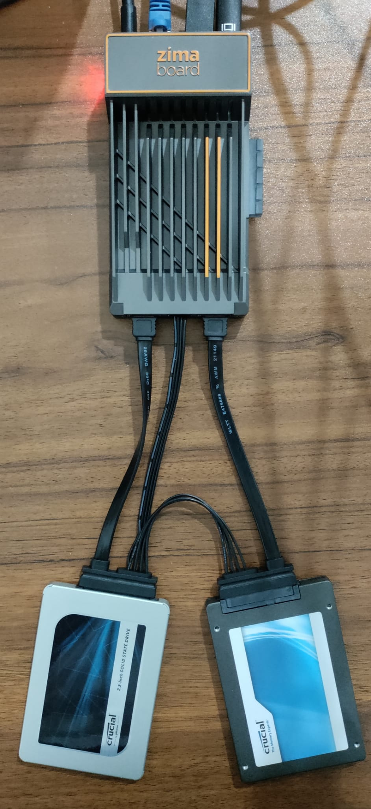

Oct 52023
I setup a Github actions workflow that calls the OpenWeatherAPI everyday as an automated task. The task script runs on an ubuntu machine utilizing a cURL command. The response from the cURL command is saved into text file which is then committed and pushed into the repository. The workflow setup to build and deploy this webpage is responsible for making sure the website is updated. This website is embedded with a script which pulls the data from the text file and parses it into JSON objects. From this, we extract temperature and humidity and display it on the webpage.
Temperature: °F
Feels Like: °F
Humidity: %
on
Oct 12023
The YouTube downloader application utilizes the Pytube module to fetch and download videos from Youtube. The application provides two options for downloading. The standard option can be used to download videos with the highest resolution that the module can process. Most of the times, this happens to be capped at 720p.
The pytube module offers a feature to download videos at higher resolutions like 1080p except with no audio. The second option this application offers allows you to download videos available at the highest resolutions. We download the audio and video files separately and use the Moviepy module to stitch the audio and video files together.
Feb 72023

So I've played around with an old PC that was salvaged and turned into a Network Attached Storage Machine (a NAS). It did the job but was running on some pretty old hardware. It was time to upgrade to something maybe slightly more powerful and most importantly, energy efficient.
The ZimaBoard 832 is equipped with an Intel Celeron N3450 processor with a quad core.It comes with 8 Gb RAM and 32 Gb Internal Storage. This should be sufficient to run a lightweight Operating System. The zimaboard is pre-installed with CasaOS, an open-source OS perfect for Home Cloud Applications.
After playing around with this device, it was time to start experimenting the features and prepare it to be converted into a NAS. The first thing we did was installing Windows 10 Entrprise LTSC. This is a stripped down version of Windows 10. It does not have bloatware or applications that may change over time. In essence, this OS provides features and functionality that are not meant to change over time.
Next, to make sure this system is fault-tolerant in case of a drive failure, we mirrored the OS on two seperate SSDs. The instructions to successfully mirror the OS lacked some details and took sometime to figure out. It was not straight forward doing this because the Disk Management application produces errors that are not very helpful.
After quite some tinkering, replacing drives, and fresh installs, I realised that the Recovery partition on the Primary OS drive needs to be deleted. I am not exactly sure why we need to do this but I will be back with an update. I was finally able to mirror after doing so and voila! The OS is mirrored and we're a step closer to building the NAS.
The goal of this project is simple. We want to migrate everything on the old TrueNAS machine onto this tiny computer. This will be home to a Plex server with a library of movies, videos, and more.
Sep 152022

A recent fun activity I engaged myself into was playing with a Unifi UDM Pro Router.
This is hands down, a nerdy and fun router. It is not your regular router by any means.
It is typically meant for small-scale businesses. So it all started with the network going
down for 2-3 days. It was challenging to identify what was wrong initially . Eventually,
it all came down to be an issue with a recent firmware upgrade. I figured the Unifi router automatically upgraded to the latest firmware even though auto updates were turned off.
It was interesting to observe during testing, that nearly 20% of the CPU and 40% of memory were being used up even when no
devices were connected to the router. The router was operating at around
45° C at the same time. What was the router doing anyways?
Well, I don't have an answer yet. But I look forward to finding out at some point.
**Update as of February 2, 2023**
So it turns out a USB Hub was causing the issue. In particular, it was a Lenovo Docking Station that brought the network down to it's knees.
Although we identified the device causing the issue a few months ago, we did not know the exact reason until today. One possible reason behind this disruption is that these hubs flood the network with some sort of traffic.
There is still a part of the problem we are unsure of. What kind of traffic is this Dock flooding the network with? Although some discussions on the internet pointed that these could be 'Pause frames' that the switch is not handling well.
The part that annoys me the most is that the Dock is powered but disconnected from the laptop, it still manages to push "something" into the network, causing a disruption.
I realized just how widespread this problem is while reading some of the discussions on forums. However, these discussions seem to be very specific to a community of folks who have a deep understanding of Hardware and Networks.